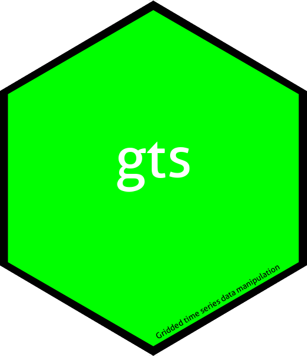

Transform coordinates between coordinate reference systems
Source:R/coordinates.R
transform_coordinates.Rd`transform_coordinates()` transforms a set of two-dimensional coordinates from one coordinate reference system (CRS) to another using `sf`.
Arguments
- object
A two-column matrix- or data-frame-like object containing coordinates. The first column is interpreted as `x` and the second as `y`.
- crs_old
Original CRS of the coordinates. This is passed to `sf` when constructing the input geometry.
- crs_new
Target CRS of the transformed coordinates. The default is `"EPSG:4326"`.
Details
The function converts each coordinate pair to an `sf` point geometry, constructs a simple-feature geometry set with the supplied input CRS, and transforms it to `crs_new` with [sf::st_transform()].
The returned coordinates are provided as a plain `data.frame` with columns `x` and `y`.
Examples
if (FALSE) { # \dontrun{
pts <- data.frame(x = c(-75, -74), y = c(-12, -11))
transform_coordinates(pts, crs_old = "EPSG:4326", crs_new = "EPSG:3857")
} # }